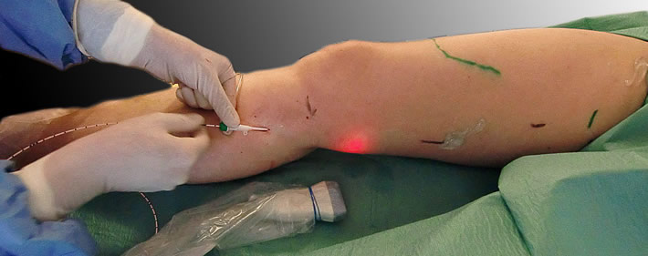
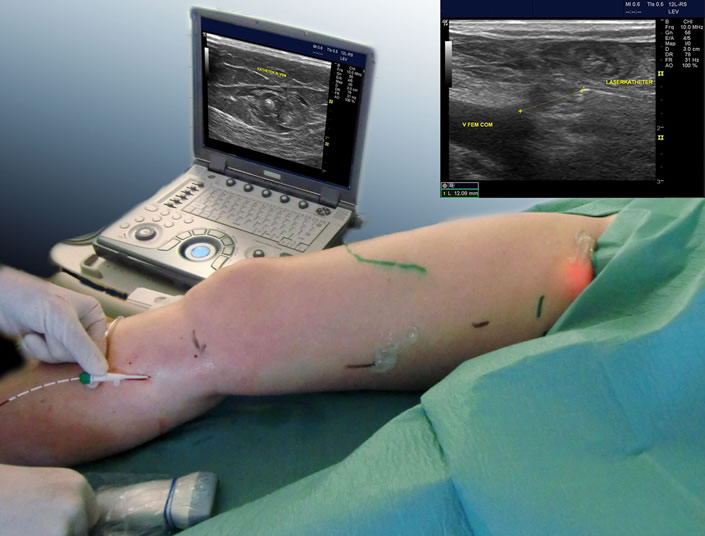
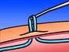
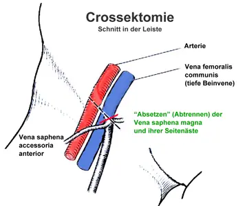
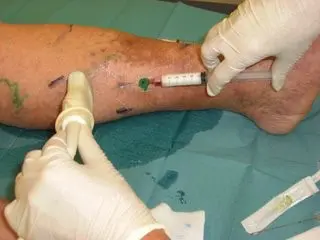
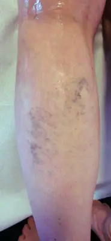
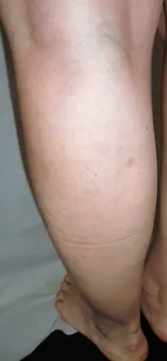

Das Prinzip der endovenösen Verfahren: Die erkrankten Stammvenen werden nicht mehr chirurgisch entfernt, sondern thermisch oder chemisch „ausgeschaltet". Die so verödete Vene wird durch körpereigene Prozesse vollständig resorbiert. So bleibt ein Schnitt in der Leiste oder Kniekehle erspart – das führt zu einer schmerzarmen und verkürzten Heilungsphase.

Der endovenöse Eingriff ist der erste Schritt: Damit wird die erkrankte Stammvene verödet. Die erkrankten Seitenäste – die eigentlichen, sichtbaren Krampfadern – werden in einem zweiten Schritt mit der Phlebektomie Stück für Stück entfernt.
Beim ClosureFast-Verfahren (ClosureFast™-Technologie) der Medtronic wird ein Katheter in die erkrankte Vene eingeführt, an dessen Ende ein 7 cm langes Segment gezielt erhitzt wird. Der Katheter wird in Schritten unter Ultraschallkontrolle zurückgezogen. Die Vene verschliesst sich durch die Hitzeeinwirkung und wird vom Körper innerhalb von Wochen bis Monaten vollständig resorbiert.
Eine Lichtleitfaser wird in die erkrankte Vene eingeführt und bis zur Leiste (Vena saphena magna) oder Kniekehle (Vena saphena parva) vorgeschoben. Die Laserenergie wird über die Lichtleitfaser radial während des kontinuierlichen Rückzugs abgegeben, wodurch sich die Vene schliesst. Biolitec ist einer der führenden Anbieter mit dem ELVeS Radial Laser-Verfahren.

Bei der endovenösen Radiofrequenztherapie wird an der Spitze eines dünnen Katheters durch Radiowellen Wärme erzeugt, die auf die Veneninnenwand einwirkt und zur Verschliessung der erkrankten Vene führt. Der Arzt führt den Katheter über eine Punktion im Bein ein und schiebt ihn bis in die Leiste oder Kniekehle vor; durch langsames Zurückziehen wird die Venenwand erhitzt und verschlossen. In den folgenden Wochen bis Monaten baut der Körper die Vene ab.
Mit VenaSeal der Medtronic Inc. (USA) wird ultraschall-kontrolliert ein Katheter in die Vene eingeführt und die erkrankte Stammvene mit einem speziellen Applikator mit Acrylat-Gewebekleber dauerhaft verklebt. Damit kann nur die Stammvene behandelt werden, nicht die Seitenäste – diese müssen durch Phlebektomie oder Schaumsklerotherapie entfernt werden.
Die Echotherapie kombiniert hochintensiven, fokussierten Ultraschall (HIFU) zur Ablation und herkömmliche Ultraschallbildgebung. Das Verfahren steckt jedoch noch in der Entwicklungsphase, die Dauer der Therapie ist noch zu lang und die Seitenäste können damit nicht entfernt werden. Wir bieten diese Therapie deshalb derzeit nicht an. Das Venenzentrum verfolgt ständig die Entwicklung neuer Therapieformen.
Die erkrankten Seitenäste der erkrankten Stammvenen sind die eigentlichen Krampfadern – und häufig der Grund, warum Patienten den Arzt aufsuchen. Sowohl die erkrankten Seitenäste als auch die Rezidivseitenäste werden durch die Phlebektomie beseitigt. Man nennt dieses Verfahren auch Häkchenmethode.
In der Regel erfolgt die Phlebektomie als 2. Schritt nach der endovenösen Therapie, aber in der gleichen Sitzung.

Dieser Eingriff wird ambulant und in Lokalanästhesie durchgeführt, in der Regel direkt im Anschluss an die endovenöse Therapie. Kleine Stichinzisionen von 1–2 mm Länge werden über den angezeichneten Venen gesetzt. Mit einem speziellen Häkchen werden die Venen Stück für Stück herausgezogen. Die Länge kann stark variieren – von 10 cm bis zu 200 cm, falls beide Beine betroffen sind.
Die bekannteste Therapie ist die chirurgische Entfernung der erkrankten Vene (Crossektomie und Stripping). Sie wird aber vermehrt von den endovenösen, ambulanten Therapien abgelöst. Die klassische Krampfadern-OP besteht im Wesentlichen aus 3 Schritten:

Das Prinzip: Ein Verödungsmittel, das mit Luft aufgeschäumt wird, schädigt die Innenwand (Intima) der Venen; diese werden vom Körper im Verlauf von Wochen und Monaten resorbiert. Das Verödungsmittel wird unter Ultraschallkontrolle in die erkrankte Vene gespritzt – der Eingriff ist schmerzlos.
Die Therapie eignet sich insbesondere für Rezidivvarizen, kann aber auch bei Stammvenen (VSM, VSP) oder Seitenästen in der Ersttherapie angewendet werden.

Unter Besenreisern versteht man oberflächlich in der Haut gelegene, kleine Gefässe, die blau oder rötlich sind. Sie können Folge einer Insuffizienz des Venensystems sein – deshalb sollte bei einer ausgeprägten Besenreiservarikosis eine duplexsonographische Untersuchung erfolgen.
Die Kosten einer kosmetischen Entfernung von Besenreisern werden von der obligatorischen Krankenversicherung nicht erstattet.
Als wirksamste Methode hat sich die Flüssig-Sklerotherapie mit Alkohol oder Glycerin (Sclérémo) bewährt: Kleinstmengen werden in die Besenreiser gespritzt. Die Behandlung dauert je nach Ausdehnung der Befunde in der Regel zwischen 15 und 30 Minuten; oft sind mehrere Sitzungen nötig.

